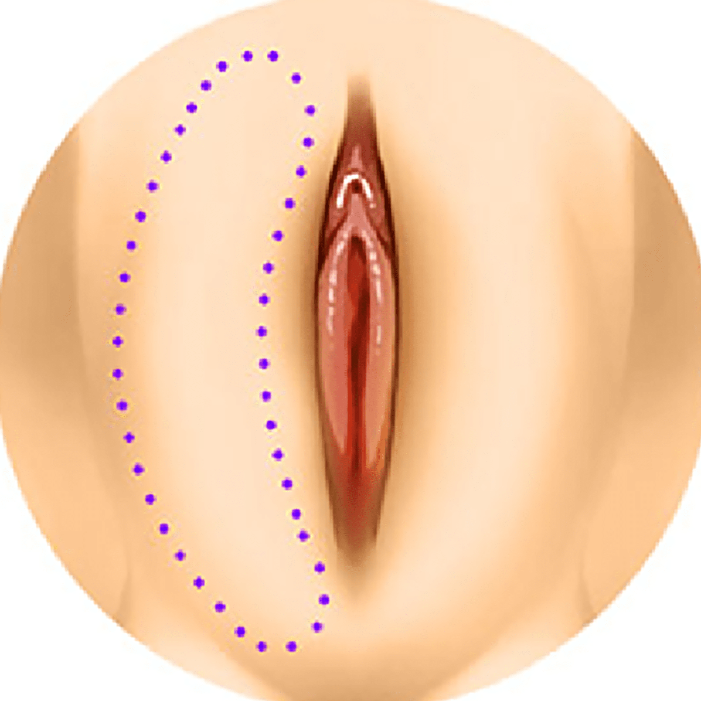
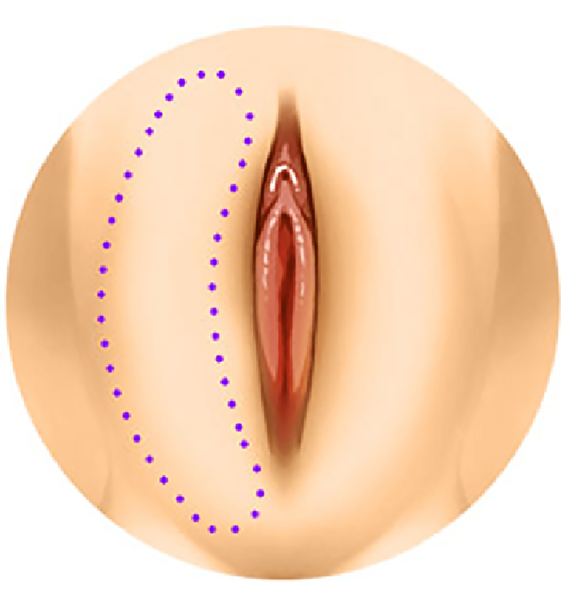

나를 위한 대음순 성형
나를위한 산부인과의
“대음순 성형”
은
의료진의 노하우와 기술력으로
소음순 및 외음부의
형태에 따라 가장 이상적인 대음순 성형이 가능합니다
- 수술시간 20분 내외
- 회복기간 2주
- 입원여부 없음
- 마취방법 수면+국소마취
이상적인 대음순 형태


소음순을 둘러싸고 있는 지방조직입니다.
외부 자극으로부터 생식기를 보호합니다.
상하 길이 7~8cm, 넓이는 2~3cm, 두께는 1~1.5cm
기능적으로는 양쪽 소음순을 감출 정도의 크기가
가장 이상적인 소음순이라 할 수 있습니다.
대음순 성형 대상자
-
대음순이 쪼글쪼글한 경우
-
대음순이 노화되어 늘어졌거나 주름이 심한 경우
-
비키니나 밀착된 옷을 입었을 때
대음순이 불룩하게 돌출되는 경우 -
대음순 이물질 제거 후
여분의 피부가 남아있는 경우
나를위한 하이브리드 레이저

시술 부위에 열 상승 없이 에너지를 전달하여
정상조직에 손상 가능성이 적으며
절개가 되는 동시에 지혈이 이루어지기 때문에
부종과 통증이 적고 바로 일상생활이
가능할 정도로
회복이 빠른 성형 레이저입니다.
-
절개와 동시에 지혈
출혈 최소화
50-60도의 낮은 열로 절개와
동시 지혈이 가능하여
예민한 부위의
손상이 적고
회복이 빠릅니다 -
통증과 부기 최소화
흉터가 거의 남지 않음
성형외과 수술 시 사용했던
의료장비로 민감한 부위 절개 시
섬세한 교정 및 디자인이
가능합니다 -
빠른 회복
빠른 일상생활 복귀
붓기나 통증이 거의 없어
다음날 출근과 일상생활도
가능합니다
대음순 성형 수술 방법
-
소음순 및 외음부의
형태에 따라
가장 이상적인
대음순 형태 디자인 -
늘어져 있는
피부 제거 -
봉합 부위에 흉터가
남지 않도록
섬세하게 봉합
대음순 성형 효과
-
늘어진 대음순
피부 및 주름
개선 -
대음순의
볼륨감 개선 -
성관계 시
성감 개선 -
착색된 피부 개선
대음순 성형은 왜
나를위한 산부인과?

-
섬세하고 깔끔한 절개와
봉합으로 흉터 걱정 없이
봉긋한 대음순 형태 완성 -
소음순이나 질 입구의 형태까지
충분히 고려해 전체적으로 조화로운
외음부 형태가 될 수 있도록
자연스럽고 조화로운
대음순 디자인

프라이빗한 휴식 과 회복
나를위한산부인과에서는 치료를 받는
환자분들이
긴장을 완화하고 편안한
마음으로 쉬실 수 있도록
고급스럽고
편안한 분위기의 1인 회복실을 제공합니다.
대음순
성형 후 주의사항
시술 후 주의 사항은 개인 차가 있을 수 있습니다.
-
01
붓기와 통증을 가라앉히기 위해, 수술 후 3일 이상 수술 부위를
아이스팩으로 냉찜질해 주세요.
(아이스팩을 키친타월 등으로 감싼 후
수술 부위에 대시고 생리대를 사용해 주세요) -
02
샤워는 수술 다음날 저녁부터 가능하시며, 수술 당일에는 피해주세요.
아래의 과정을 3주간 하시게 됩니다. -
샤워
건조
-
소독 면봉을
이용해 소독 건조
-
마데카솔 분말 도포
-
03
수술 부위 진물과 출혈은 1~2주 정도 패드에 묻어납니다.
(샤워와 소독 후에도 상처 및 봉합 부위를 철저히 건조해 주세요) -
04
4주간 성관계, 비데, 탐폰, 무리한 운동
(유산소, 자전거, 헬스, 수영 등)은 피해주세요. -
05
처방된 약은 항생제와 소염진통제입니다.
만약 복약 후 알레르기 반응(가려움, 두드러기, 설사, 복통)이
생기실 경우 복약을 중지하시고 본원으로 연락주세요. -
06
본원에서 사용하는 봉합사는 성형 전문 실로 상처 부위를 잘 아물게
하여 흉터가 적게 생기며, 2~3주 내 체내에 흡수되기에 실밥을
제거할 필요가 없습니다.
다만 실밥이 녹으면서 가려우시거나
실밥이 일부 남아 있는 경우 수술 후 2주 차에 제거 가능합니다. -
07
수술 경과를 관찰하기 위해 수술 다음 날, 1주, 2주, 4주 차 때
내원해 주세요. -
08
회복 기간은 환자마다 상이하나 평균 3~4주입니다.
-
09
수술 후 생리대를 다 적실 듯한 과한 출혈이 있을 경우 병원으로 연락 주세요.